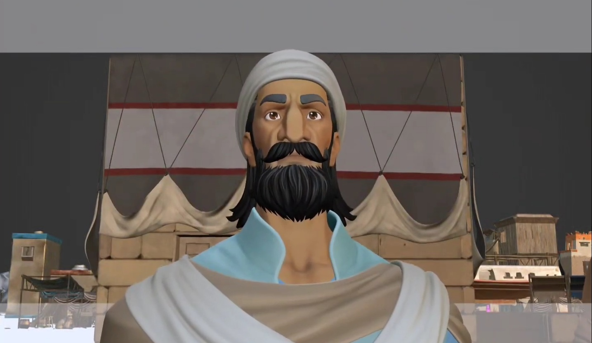
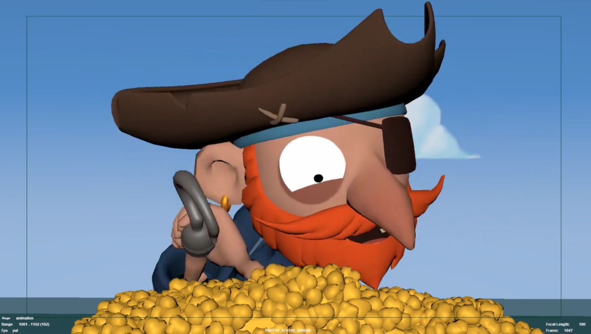
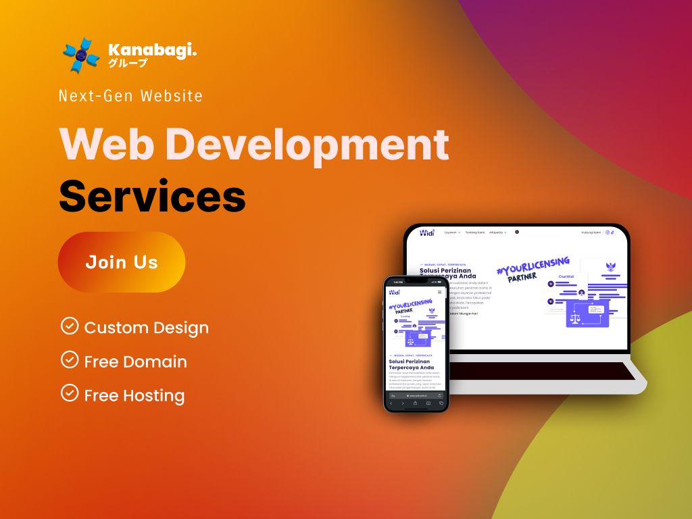
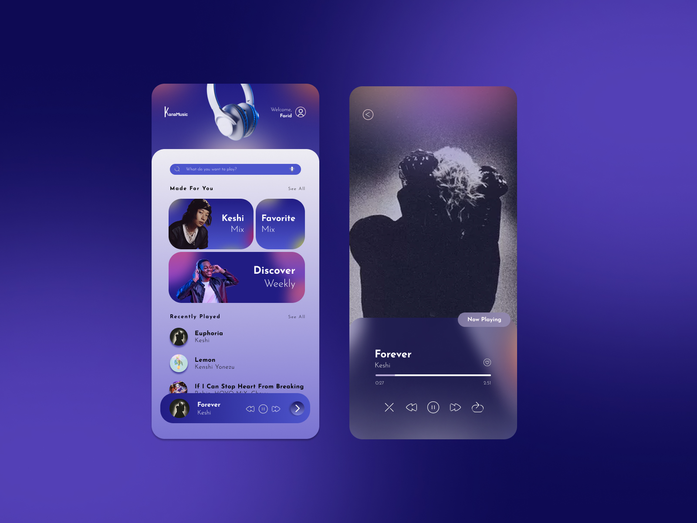
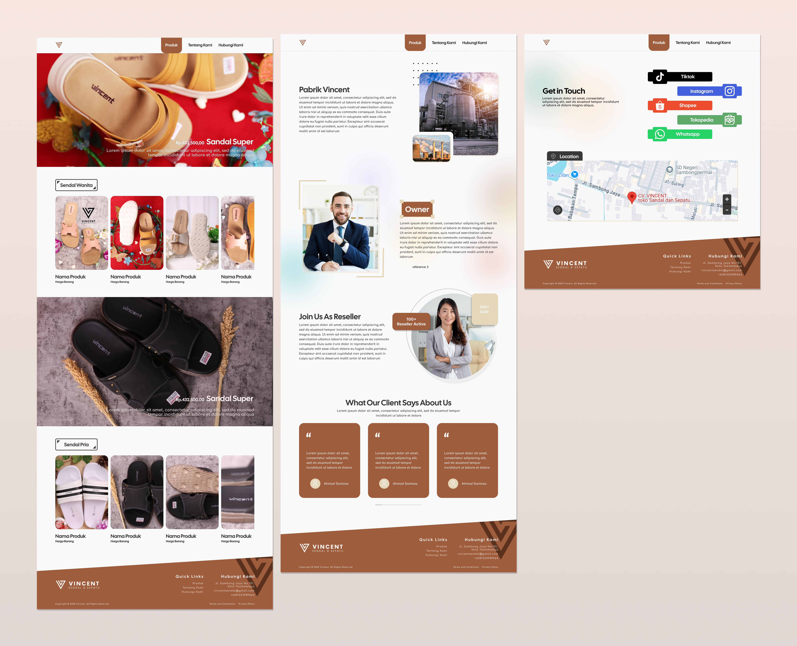

3D Animation
Blender Showreel
A collection of character animations, dialogue lip-sync, and dynamic body mechanics created in Blender.
Hello, I'm
I create dynamic animations and impactful designs using tools like Blender and Figma. Let's bring your ideas to life!
What I Do
Bringing characters, products, and ideas to life through expressive movement and fluid motion in Blender.
Crafting clear, engaging visual designs for web promos, logos, social media campaigns, brand collateral, and digital illustrations.
Creating clear, modern web and mobile UI/UX designs that balance aesthetics with effortless functionality.
Selected Work
Type in the search bar above, or filter by category below. Click a project to see more.

A collection of character animations, dialogue lip-sync, and dynamic body mechanics created in Blender.

Focused on character acting, expressive performance, and weight mechanics created in Autodesk Maya.
Dynamic graphic layout combining character illustration with bold typography, designed for apparel and merchandise.

A vibrant marketing graphic engineered to drive conversions with bold typography and festive visuals.

Practical UI/UX studies exploring modern interface design conventions.

A curation of real-world web design projects and practical UI/UX study concepts across desktop and mobile interfaces.
No projects match your search yet — try a different keyword or category.
Background
Gained graphic design and video editing skills through school extracurriculars to create promotional media for events.
Drives direct sales and product distribution across retail and wholesale outlets to boost sales and market coverage.
Managed transparent social aid distribution and home visits for elderly recipients to support vulnerable communities.
Created high-quality 3D animation sequences using core animation principles to deliver engaging and dynamic visual content.
Served fresh milk products with excellent customer service while maintaining high workspace cleanliness standards.
Managed administrative tasks while designing visual content and promotional materials to support daily operations.
Specialized in creating unique brand logos and engaging character designs to enhance visual identity and storytelling.
Get In Touch